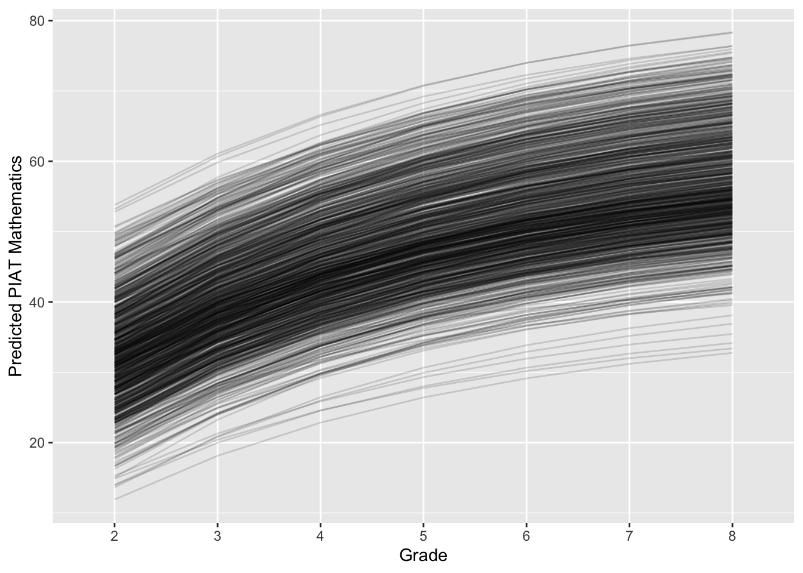
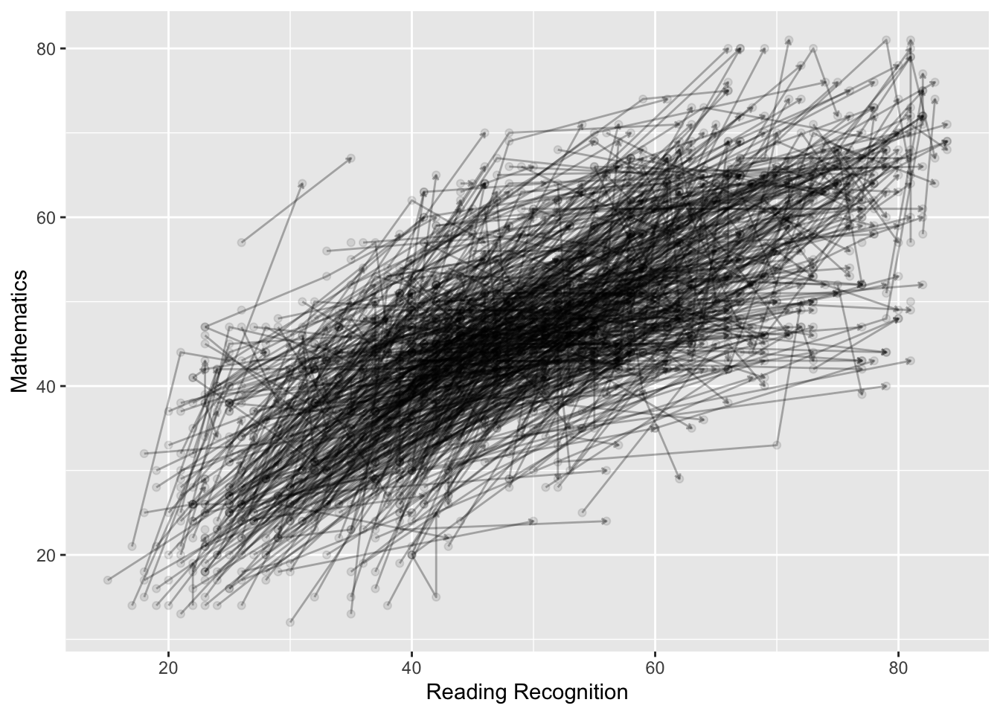
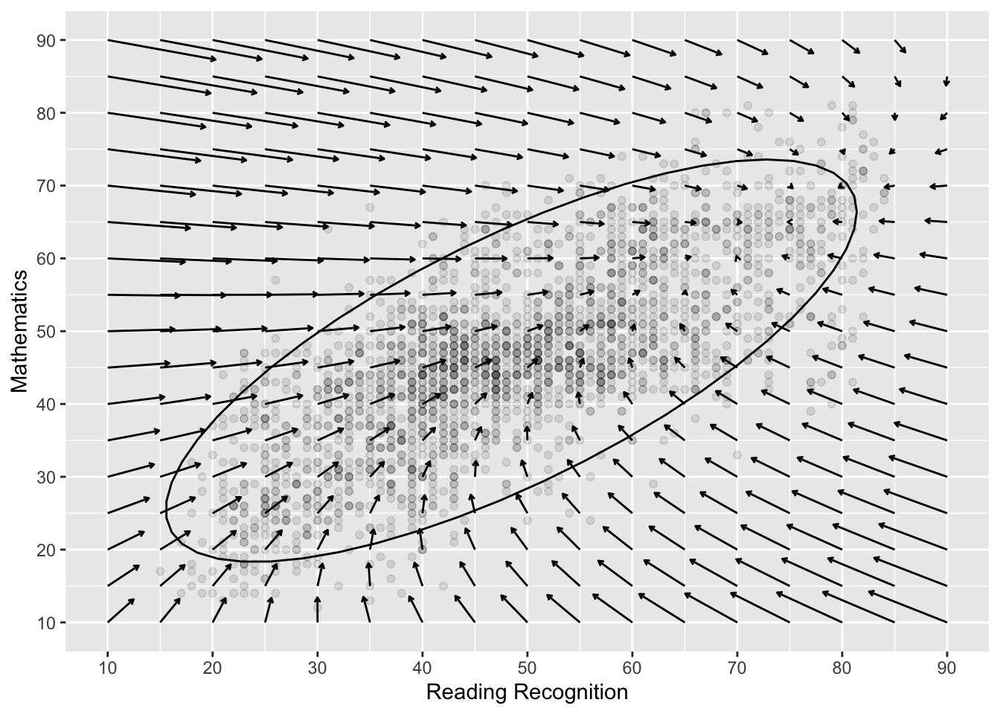

We have previously been fitting multiple lines via “groups” that are predicted to differ on their development.
What this overlooks though is that the “group” variable itself is a developmental construct.
Can we simultanously model 2+ growth trajectories at once?
Multiple DVs
Normally our models are constrained to 1 DV at a time. However, SEM is well suited for multiple DVs as there is less of an emphasis on a single traditional equation. “If you can draw it you can model it”
Some ~basic multivariate models can be run with MLM
Growth models (can be MV)
Longitudinal CFA (can be MV)
Cross lag panel model (MV)
Longitudinal mediation (MV)
Growth models + cross lags (MV)
Latent change/difference score models (often MV)
Dynamic factor and dSEM models. (MV)
Mixture or class based longitudinal models (often MV)
── Conflicts ────────────────────────────────────────── tidyverse_conflicts() ──
✖ dplyr::filter() masks stats::filter()
✖ dplyr::lag() masks stats::lag()
ℹ Use the conflicted package (<http://conflicted.r-lib.org/>) to force all conflicts to become errors
Code
model.1<-' i =~ 1*PosAFF11 + 1*PosAFF12 + 1*PosAFF13 s =~ 0*PosAFF11 + 1*PosAFF12 + 2*PosAFF13'fit.1<-growth(model.1, data=affect)summary(fit.1)
lavaan 0.6-19 ended normally after 31 iterations
Estimator ML
Optimization method NLMINB
Number of model parameters 8
Number of observations 368
Model Test User Model:
Test statistic 0.016
Degrees of freedom 1
P-value (Chi-square) 0.898
Parameter Estimates:
Standard errors Standard
Information Expected
Information saturated (h1) model Structured
Latent Variables:
Estimate Std.Err z-value P(>|z|)
i =~
PosAFF11 1.000
PosAFF12 1.000
PosAFF13 1.000
s =~
PosAFF11 0.000
PosAFF12 1.000
PosAFF13 2.000
Covariances:
Estimate Std.Err z-value P(>|z|)
i ~~
s -0.041 0.026 -1.609 0.108
Intercepts:
Estimate Std.Err z-value P(>|z|)
i 3.210 0.035 91.085 0.000
s 0.045 0.020 2.268 0.023
Variances:
Estimate Std.Err z-value P(>|z|)
.PosAFF11 0.314 0.049 6.456 0.000
.PosAFF12 0.244 0.024 10.322 0.000
.PosAFF13 0.185 0.038 4.930 0.000
i 0.210 0.046 4.608 0.000
s 0.024 0.021 1.187 0.235
Warning: lavaan->lav_object_post_check():
covariance matrix of latent variables is not positive definite ; use
lavInspect(fit, "cov.lv") to investigate.
Warning: lavaan->lav_object_post_check():
covariance matrix of latent variables is not positive definite ; use
lavInspect(fit, "cov.lv") to investigate.
Warning: package 'Rcpp' was built under R version 4.4.3
Loading 'brms' package (version 2.22.0). Useful instructions
can be found by typing help('brms'). A more detailed introduction
to the package is available through vignette('brms_overview').
Attaching package: 'brms'
The following object is masked from 'package:stats':
ar
Code
mlm.4<-brm(family = gaussian, CON ~1+ time + (1+ time | ID),prior =c(prior(normal(0, 1.5), class = Intercept),prior(normal(0, 1.5), class = b),prior(normal(0, 1.5), class = sd, coef = Intercept, group = ID), prior(normal(0, 1.5), class = sd, coef = time, group = ID), prior(exponential(1), class = sigma),prior(lkj(2), class = cor)),iter =4000, warmup =1000, chains =4, cores =4,file ="mlm.4",backend ="cmdstanr",data = mlm)
summary(mlm.4)
Warning: There were 113 divergent transitions after warmup. Increasing
adapt_delta above 0.8 may help. See
http://mc-stan.org/misc/warnings.html#divergent-transitions-after-warmup
Family: gaussian
Links: mu = identity; sigma = identity
Formula: CON ~ 1 + time + (1 + time | ID)
Data: mlm (Number of observations: 225)
Draws: 4 chains, each with iter = 4000; warmup = 1000; thin = 1;
total post-warmup draws = 12000
Multilevel Hyperparameters:
~ID (Number of levels: 91)
Estimate Est.Error l-95% CI u-95% CI Rhat Bulk_ESS Tail_ESS
sd(Intercept) 0.06 0.01 0.05 0.07 1.00 2753 2811
sd(time) 0.00 0.00 0.00 0.01 1.00 1107 1240
cor(Intercept,time) -0.09 0.40 -0.76 0.73 1.00 6883 6811
Regression Coefficients:
Estimate Est.Error l-95% CI u-95% CI Rhat Bulk_ESS Tail_ESS
Intercept 0.19 0.01 0.18 0.21 1.00 3631 5985
time -0.00 0.00 -0.01 0.00 1.00 7367 4930
Further Distributional Parameters:
Estimate Est.Error l-95% CI u-95% CI Rhat Bulk_ESS Tail_ESS
sigma 0.05 0.00 0.04 0.05 1.00 2706 1941
Draws were sampled using sampling(NUTS). For each parameter, Bulk_ESS
and Tail_ESS are effective sample size measures, and Rhat is the potential
scale reduction factor on split chains (at convergence, Rhat = 1).
Code
mv.1<-brm(family = gaussian,mvbind(CON, DAN) ~1+ time + (1+ time |i| ID),prior =c(prior(normal(0, 1.5), class = Intercept),prior(normal(0, 1.5), class = b),prior(lkj(2), class = cor),prior(lkj(2), class = rescor)),iter =4000, warmup =1000, chains =4, cores =4,file ="mv.1a",backend ="cmdstanr",data = mlm)
summary(mv.1)
Warning: There were 49 divergent transitions after warmup. Increasing
adapt_delta above 0.8 may help. See
http://mc-stan.org/misc/warnings.html#divergent-transitions-after-warmup
Family: MV(gaussian, gaussian)
Links: mu = identity; sigma = identity
mu = identity; sigma = identity
Formula: CON ~ 1 + time + (1 + time | i | ID)
DAN ~ 1 + time + (1 + time | i | ID)
Data: mlm (Number of observations: 225)
Draws: 4 chains, each with iter = 4000; warmup = 1000; thin = 1;
total post-warmup draws = 12000
Multilevel Hyperparameters:
~ID (Number of levels: 91)
Estimate Est.Error l-95% CI u-95% CI Rhat
sd(CON_Intercept) 0.06 0.01 0.05 0.07 1.00
sd(CON_time) 0.00 0.00 0.00 0.01 1.00
sd(DAN_Intercept) 0.04 0.01 0.03 0.05 1.00
sd(DAN_time) 0.00 0.00 0.00 0.01 1.00
cor(CON_Intercept,CON_time) -0.08 0.34 -0.68 0.63 1.00
cor(CON_Intercept,DAN_Intercept) 0.39 0.15 0.09 0.66 1.00
cor(CON_time,DAN_Intercept) -0.09 0.34 -0.71 0.59 1.00
cor(CON_Intercept,DAN_time) 0.27 0.33 -0.48 0.81 1.00
cor(CON_time,DAN_time) -0.03 0.38 -0.72 0.68 1.00
cor(DAN_Intercept,DAN_time) -0.01 0.34 -0.63 0.65 1.00
Bulk_ESS Tail_ESS
sd(CON_Intercept) 4047 5871
sd(CON_time) 1343 1502
sd(DAN_Intercept) 3653 6498
sd(DAN_time) 1832 2156
cor(CON_Intercept,CON_time) 7494 7579
cor(CON_Intercept,DAN_Intercept) 2781 5651
cor(CON_time,DAN_Intercept) 747 1629
cor(CON_Intercept,DAN_time) 9219 7905
cor(CON_time,DAN_time) 5874 7156
cor(DAN_Intercept,DAN_time) 9426 7751
Regression Coefficients:
Estimate Est.Error l-95% CI u-95% CI Rhat Bulk_ESS Tail_ESS
CON_Intercept 0.19 0.01 0.18 0.21 1.00 4244 7025
DAN_Intercept 0.20 0.01 0.19 0.22 1.00 7889 8944
CON_time -0.00 0.00 -0.01 0.00 1.00 10614 9401
DAN_time -0.01 0.00 -0.01 -0.00 1.00 10508 8811
Further Distributional Parameters:
Estimate Est.Error l-95% CI u-95% CI Rhat Bulk_ESS Tail_ESS
sigma_CON 0.05 0.00 0.04 0.05 1.00 4059 4263
sigma_DAN 0.05 0.00 0.04 0.05 1.00 3102 3564
Residual Correlations:
Estimate Est.Error l-95% CI u-95% CI Rhat Bulk_ESS Tail_ESS
rescor(CON,DAN) 0.06 0.09 -0.12 0.23 1.00 5317 5891
Draws were sampled using sample(hmc). For each parameter, Bulk_ESS
and Tail_ESS are effective sample size measures, and Rhat is the potential
scale reduction factor on split chains (at convergence, Rhat = 1).
# A tibble: 6 × 9
ID DAN_1 CON_1 DAN_2 CON_2 DAN_3 CON_3 DAN_4 CON_4
<int> <dbl> <dbl> <dbl> <dbl> <dbl> <dbl> <dbl> <dbl>
1 6 0.162 0.193 0.168 0.195 0.215 0.181 NA NA
2 29 0.175 0.159 0.136 0.0881 NA NA NA NA
3 34 0.166 0.137 0.140 0.0746 NA NA NA NA
4 36 0.152 0.139 0.205 0.180 NA NA NA NA
5 37 0.219 0.226 0.158 0.178 0.259 0.152 NA NA
6 48 0.130 0.250 0.270 0.232 0.248 0.173 NA NA
Warning: lavaan->lav_data_full():
due to missing values, some pairwise combinations have less than 10%
coverage; use lavInspect(fit, "coverage") to investigate.
Warning: lavaan->lav_mvnorm_missing_h1_estimate_moments():
The smallest eigenvalue of the EM estimated variance-covariance matrix
(Sigma) is smaller than 1e-05; this may cause numerical instabilities;
interpret the results with caution.
Warning: lavaan->lav_object_post_check():
some estimated lv variances are negative
Code
summary(fit.bv.c,standardized=TRUE)
lavaan 0.6-19 ended normally after 246 iterations
Estimator ML
Optimization method NLMINB
Number of model parameters 22
Number of observations 91
Number of missing patterns 3
Model Test User Model:
Test statistic 99.387
Degrees of freedom 22
P-value (Chi-square) 0.000
Parameter Estimates:
Standard errors Standard
Information Observed
Observed information based on Hessian
Latent Variables:
Estimate Std.Err z-value P(>|z|) Std.lv Std.all
i.dan =~
DAN_1 1.000 0.049 0.790
DAN_2 1.000 0.049 0.765
DAN_3 1.000 0.049 0.767
DAN_4 1.000 0.049 0.503
s.dan =~
DAN_1 0.000 0.000 0.000
DAN_2 1.000 0.029 0.450
DAN_3 2.000 0.058 0.901
DAN_4 3.000 0.087 0.886
i.con =~
CON_1 1.000 0.053 0.734
CON_2 1.000 0.053 0.725
CON_3 1.000 0.053 0.710
CON_4 1.000 0.053 0.566
s.con =~
CON_1 0.000 NA NA
CON_2 1.000 NA NA
CON_3 2.000 NA NA
CON_4 3.000 NA NA
Covariances:
Estimate Std.Err z-value P(>|z|) Std.lv Std.all
i.dan ~~
s.dan -0.001 0.000 -1.087 0.277 -0.362 -0.362
i.con 0.001 0.000 1.949 0.051 0.340 0.340
s.con 0.000 0.000 0.300 0.764 0.121 0.121
s.dan ~~
i.con 0.001 0.000 1.972 0.049 0.418 0.418
s.con -0.000 0.000 -1.615 0.106 -0.701 -0.701
i.con ~~
s.con 0.000 0.000 0.603 0.546 0.409 0.409
Intercepts:
Estimate Std.Err z-value P(>|z|) Std.lv Std.all
i.dan 0.202 0.006 31.530 0.000 4.100 4.100
s.dan -0.009 0.005 -1.926 0.054 -0.318 -0.318
i.con 0.192 0.007 26.588 0.000 3.659 3.659
s.con -0.004 0.004 -0.952 0.341 NA NA
Variances:
Estimate Std.Err z-value P(>|z|) Std.lv Std.all
.DAN_1 0.001 0.001 2.166 0.030 0.001 0.376
.DAN_2 0.002 0.000 4.723 0.000 0.002 0.461
.DAN_3 0.000 0.001 0.573 0.566 0.000 0.100
.DAN_4 0.003 0.002 1.282 0.200 0.003 0.284
.CON_1 0.002 0.001 3.214 0.001 0.002 0.461
.CON_2 0.002 0.001 4.062 0.000 0.002 0.398
.CON_3 0.002 0.001 2.649 0.008 0.002 0.417
.CON_4 0.006 0.003 1.674 0.094 0.006 0.669
i.dan 0.002 0.001 3.156 0.002 1.000 1.000
s.dan 0.001 0.000 2.253 0.024 1.000 1.000
i.con 0.003 0.001 3.187 0.001 1.000 1.000
s.con -0.000 0.000 -0.586 0.558 NA NA
A broader MV framework
Back to two conceptualizations of change. We want to integrate 1. differential and 2. absolute change conceptions.
How to measure change, or should we? https://www.gwern.net/docs/dnb/1970-cronbach.pdf This paper lays out some of the problems that occur with standard treatments of two wave assessments.
Depends on if people start at similar places (who changed the most vs who ended up higher than expected, given where they started)
difference/change scores
lm((post - pre) ~ 1
PROs:
Gives average change directly.
CONS:
Separate computation outside model.
Doesn’t scale well.
Assumes perfectly reliable change.
Initial (or last) assessment often highly correlated with change
residualized (autoregressive) model
lm(post ~ 1 + pre)
PROs:
Accounts for error by regressing to the mean, almost “pooling” towards the average as in MLMs.
Controls for initial level.
CONs:
Assumes people change via the same process.
Not a principled way to account for measurement error.
Call:
lm(formula = diff ~ group, data = df)
Residuals:
Min 1Q Median 3Q Max
-0.5174 -0.1133 0.0208 0.1310 0.4612
Coefficients:
Estimate Std. Error t value Pr(>|t|)
(Intercept) 0.038975 0.017300 2.253 0.0254 *
groupControl 0.004028 0.024466 0.165 0.8694
---
Signif. codes: 0 '***' 0.001 '**' 0.01 '*' 0.05 '.' 0.1 ' ' 1
Residual standard error: 0.173 on 198 degrees of freedom
Multiple R-squared: 0.0001369, Adjusted R-squared: -0.004913
F-statistic: 0.02711 on 1 and 198 DF, p-value: 0.8694
residualized change score model
summary(lm(T2 ~ group + T1, df))
Call:
lm(formula = T2 ~ group + T1, data = df)
Residuals:
Min 1Q Median 3Q Max
-0.315819 -0.066341 0.005835 0.060977 0.268154
Coefficients:
Estimate Std. Error t value Pr(>|t|)
(Intercept) 0.01724 0.01008 1.71 0.0888 .
groupControl 0.44744 0.02648 16.90 <2e-16 ***
T1 0.44538 0.02797 15.92 <2e-16 ***
---
Signif. codes: 0 '***' 0.001 '**' 0.01 '*' 0.05 '.' 0.1 ' ' 1
Residual standard error: 0.1002 on 197 degrees of freedom
Multiple R-squared: 0.9463, Adjusted R-squared: 0.9457
F-statistic: 1734 on 2 and 197 DF, p-value: < 2.2e-16
What is going on? We are asking different questions by not accounting for T1 in the former model. The change score model is accounting for the total effect (in mediation language) whereas the residualized change score model is only interested in the direct effect.
Code
mod <-' T1 ~ a*group T2 ~ b*group + c*T1 # total effect TE := (a*-1) + (a*c*1) + (b*1) 'lord <-sem(mod, data=df)summary(lord)
lavaan 0.6-19 ended normally after 1 iteration
Estimator ML
Optimization method NLMINB
Number of model parameters 5
Number of observations 200
Model Test User Model:
Test statistic 0.000
Degrees of freedom 0
Parameter Estimates:
Standard errors Standard
Information Expected
Information saturated (h1) model Structured
Regressions:
Estimate Std.Err z-value P(>|z|)
T1 ~
group (a) 0.800 0.036 22.317 0.000
T2 ~
group (b) 0.447 0.026 17.028 0.000
T1 (c) 0.445 0.028 16.043 0.000
Variances:
Estimate Std.Err z-value P(>|z|)
.T1 0.064 0.006 10.000 0.000
.T2 0.010 0.001 10.000 0.000
Defined Parameters:
Estimate Std.Err z-value P(>|z|)
TE 0.004 0.024 0.165 0.869
summary(lm(diff ~ group + T1, df))
Call:
lm(formula = diff ~ group + T1, data = df)
Residuals:
Min 1Q Median 3Q Max
-0.315819 -0.066341 0.005835 0.060977 0.268154
Coefficients:
Estimate Std. Error t value Pr(>|t|)
(Intercept) 0.01724 0.01008 1.71 0.0888 .
groupControl 0.44744 0.02648 16.90 <2e-16 ***
T1 -0.55462 0.02797 -19.83 <2e-16 ***
---
Signif. codes: 0 '***' 0.001 '**' 0.01 '*' 0.05 '.' 0.1 ' ' 1
Residual standard error: 0.1002 on 197 degrees of freedom
Multiple R-squared: 0.6662, Adjusted R-squared: 0.6628
F-statistic: 196.6 on 2 and 197 DF, p-value: < 2.2e-16
What is not immediately obvious is that the change score can be conceptualized as a series of regressions. Starting with the residualized change score model
T2 = b*T1 + e
If we assume that the relationship (b) between T1 and T2 is 1. We can re-write as:
T2 = 1*T1 + e
Then we can subtract T1 fro each side of the model, leaving:
T2 - T1 = e
In other words, a change score is equivalent to assuming a perfect regression association (correlation) between timepoints.
Here, the residual will be equal to the average change and the variance of that will be the variance in the change. This can be thought of as akin to the mean and variance of our latent slope variable.
Lets visualize each of these models via path models
Residualized change model
Our latent residual can be conceptualized as what is left over from T2 after accounting for T1 (based on the average association between T1 and T2). We now have a measure of error/change that is not correlated to T1.
lavaan 0.6-19 ended normally after 1 iteration
Estimator ML
Optimization method NLMINB
Number of model parameters 2
Number of observations 200
Model Test User Model:
Test statistic 0.000
Degrees of freedom 0
Parameter Estimates:
Standard errors Standard
Information Expected
Information saturated (h1) model Structured
Regressions:
Estimate Std.Err z-value P(>|z|)
T2 ~
T1 0.845 0.023 36.317 0.000
Variances:
Estimate Std.Err z-value P(>|z|)
.T2 0.024 0.002 10.000 0.000
summary(lm(T2~T1, df))
Call:
lm(formula = T2 ~ T1, data = df)
Residuals:
Min 1Q Median 3Q Max
-0.46327 -0.10765 0.00553 0.11529 0.44807
Coefficients:
Estimate Std. Error t value Pr(>|t|)
(Intercept) 0.09699 0.01391 6.974 4.51e-11 ***
T1 0.84469 0.02338 36.135 < 2e-16 ***
---
Signif. codes: 0 '***' 0.001 '**' 0.01 '*' 0.05 '.' 0.1 ' ' 1
Residual standard error: 0.1565 on 198 degrees of freedom
Multiple R-squared: 0.8683, Adjusted R-squared: 0.8677
F-statistic: 1306 on 1 and 198 DF, p-value: < 2.2e-16
lavaan 0.6-19 ended normally after 1 iteration
Estimator ML
Optimization method NLMINB
Number of model parameters 3
Number of observations 200
Model Test User Model:
Test statistic 0.000
Degrees of freedom 0
Parameter Estimates:
Standard errors Standard
Information Expected
Information saturated (h1) model Structured
Regressions:
Estimate Std.Err z-value P(>|z|)
T2 ~
T1 0.845 0.023 36.317 0.000
Intercepts:
Estimate Std.Err z-value P(>|z|)
.T2 0.097 0.014 7.009 0.000
Variances:
Estimate Std.Err z-value P(>|z|)
.T2 0.024 0.002 10.000 0.000
residual sd from the regression
#standard error of the estimate from linear model0.1565^2
[1] 0.02449225
Is equal to the SEM t2 variance. SEM is just regression.
Note that this model isn’t telling us anything about the difference score or even the means of the numbers per se.
library(psych)
Attaching package: 'psych'
The following object is masked from 'package:brms':
cs
The following objects are masked from 'package:ggplot2':
%+%, alpha
The following object is masked from 'package:lavaan':
cor2cov
This is why I am not a fan of the residualzed change score. It doesn’t get at change the way we typically think of it. Previously our MLMs provide a way to document systamatic change, and SEMs will do the same.
Latent change score
Using SEM we can have:
Examine absolute differences
Able to separate (account for) initial levels from change
Measuring change latently, and thus error free.
Number 2 is accomplished above in the residualized change models. However, what is not accomplished is getting terms similar to the slope component of a growth curve ie absolute change. Nor does it account for measurement error
Warning: package 'lme4' was built under R version 4.4.3
Loading required package: Matrix
Attaching package: 'Matrix'
The following objects are masked from 'package:tidyr':
expand, pack, unpack
Attaching package: 'lme4'
The following object is masked from 'package:brms':
ngrps
Code
mlm.1<-lmer(value ~ time + (1| id ), data = df.long)summary(mlm.1)
Linear mixed model fit by REML ['lmerMod']
Formula: value ~ time + (1 | id)
Data: df.long
REML criterion at convergence: 118.1
Scaled residuals:
Min 1Q Median 3Q Max
-1.99283 -0.47843 -0.02817 0.51432 2.38752
Random effects:
Groups Name Variance Std.Dev.
id (Intercept) 0.19014 0.436
Residual 0.01489 0.122
Number of obs: 400, groups: id, 200
Fixed effects:
Estimate Std. Error t value
(Intercept) 0.36056 0.03202 11.261
time 0.04099 0.01220 3.359
Correlation of Fixed Effects:
(Intr)
time -0.191
Time equals the absolute difference!! Intercept is the value at T1. I can recreate the mean values with this output. And I can see how people differ at T1.
However, this does not tell you differences in how people change. That is, everyone is assumed to change similarly ie fixed slope.
library(lme4)mlm.2<-lmer(value ~ time + (1+ time | id ), data = df.long)
output: Error: number of observations (=400) <= number of random effects (=400) for term (1 + time | id); the random-effects parameters and the residual variance (or scale parameter) are probably unidentifiable
We can either do two things: go with Bayes or go with SEM. SEM is actually more flexible here so lets explore this option.
Knowing what we know about recreating difference scores via constraints, we can also make a latent change score by modifying the same residual path model. This time assuming the association between t1 and t2 are the same.
Remember this is our residual change model
And remember that we can recreate a difference score if we set T2 = 1*T1 + e
T2 - T1 = e
Now we can interpret the residual as change, as it is explicitly what is left over from T2 after accoutering for T1. This is starting to look like what we for a growth model.
We have: 1. Mean and variance of the slope(change), akin to our random and fixed effects in MLM 2. Covariance between intercept and slope.
Code
latent.change <-' #define difference score T2 ~ 1*T1 # define the latent change variable change =~ 1*T2 #estimate means change ~ 1 T1 ~ 1 #Constrains mean of T2 to 0 T2 ~0*1 #estimate variance of change change ~~ change #estimate variance of T1 intercept T1 ~~ T1 #constrain variance of T2 to 0 T2 ~~ 0*T2 #intercept slope covariance change ~~ T1'latent.change <-sem(latent.change, data=df)summary(latent.change)
lavaan 0.6-19 ended normally after 18 iterations
Estimator ML
Optimization method NLMINB
Number of model parameters 5
Number of observations 200
Model Test User Model:
Test statistic 0.000
Degrees of freedom 0
Parameter Estimates:
Standard errors Standard
Information Expected
Information saturated (h1) model Structured
Latent Variables:
Estimate Std.Err z-value P(>|z|)
change =~
T2 1.000
Regressions:
Estimate Std.Err z-value P(>|z|)
T2 ~
T1 1.000
Covariances:
Estimate Std.Err z-value P(>|z|)
change ~~
T1 -0.035 0.006 -5.553 0.000
Intercepts:
Estimate Std.Err z-value P(>|z|)
change 0.041 0.012 3.367 0.001
T1 0.361 0.033 10.774 0.000
.T2 0.000
Variances:
Estimate Std.Err z-value P(>|z|)
change 0.030 0.003 10.000 0.000
T1 0.224 0.022 10.000 0.000
.T2 0.000
Change now has an intercept and a variance – just like in growth curves!
Residualized latent change score
Note that we haven’t yet removed the variance from the T1 (control for T1).
This may or may not be something you want to do. It is mostly helpful if change has occurred prior to T1 and you are looking at the impact of some variable on change. If you are doing an intervention that takes place after T1 then maybe stick to latent change model. If you are measuring a developmental process across time and want to make sure that initial levels aren’t influencing change then you may want to do this. If you are doing that but think that initial levels are related to the change process then maybe you would be over controlling, wiping away what may be important. ¯_(ツ)_/¯
Group as predictor
Code
m.2<-' #define difference score T2 ~ 1*T1 # define the latent change variable change =~ 1*T2 #estimate means change ~ 1 T1 ~ 1 #Constrains mean of T2 to 0 T2 ~0*1 #estimate variance of change change ~~ change #estimate variance of T1 intercept T1 ~~ T1 #constrain variance of T2 to 0 T2 ~~ 0*T2 #change intercept covariance change ~~ T1 ## use group as a predictor T1 ~ group change ~ group'fit.2<-sem(m.2, missing ="ml", data=df)summary(fit.2)
lavaan 0.6-19 ended normally after 37 iterations
Estimator ML
Optimization method NLMINB
Number of model parameters 7
Number of observations 200
Number of missing patterns 1
Model Test User Model:
Test statistic 0.000
Degrees of freedom 0
Parameter Estimates:
Standard errors Standard
Information Observed
Observed information based on Hessian
Latent Variables:
Estimate Std.Err z-value P(>|z|)
change =~
T2 1.000
Regressions:
Estimate Std.Err z-value P(>|z|)
T2 ~
T1 1.000
T1 ~
group 0.800 0.036 22.317 0.000
change ~
group 0.004 0.024 0.165 0.869
Covariances:
Estimate Std.Err z-value P(>|z|)
.change ~~
.T1 -0.036 0.004 -8.942 0.000
Intercepts:
Estimate Std.Err z-value P(>|z|)
.change 0.035 0.038 0.908 0.364
.T1 -0.839 0.057 -14.806 0.000
.T2 0.000
Variances:
Estimate Std.Err z-value P(>|z|)
.change 0.030 0.003 10.000 0.000
.T1 0.064 0.006 10.000 0.000
.T2 0.000
Multiple group comparisons
can compare groups as well as complete vs incomplete data
Multiple group
Code
m.4<-' #define difference score T2 ~ 1*T1 # define the latent change variable change =~ 1*T2 #estimate means change ~ 1 T1 ~ 1 #Constrains mean of T2 to 0 T2 ~0*1 #estimate variance of change change ~~ change #estimate variance of T1 intercept T1 ~~ T1 #constrain variance of T2 to 0 T2 ~~ 0*T2 #change intercept covariance change ~~ T1 'fit.4<-sem(m.4, missing ="ml", data=df, group ="group")summary(fit.4, fit.measures =TRUE)
lavaan 0.6-19 ended normally after 59 iterations
Estimator ML
Optimization method NLMINB
Number of model parameters 10
Number of observations per group:
Tx 100
Control 100
Number of missing patterns per group:
Tx 1
Control 1
Model Test User Model:
Test statistic 0.000
Degrees of freedom 0
Test statistic for each group:
Tx 0.000
Control 0.000
Model Test Baseline Model:
Test statistic 165.622
Degrees of freedom 2
P-value 0.000
User Model versus Baseline Model:
Comparative Fit Index (CFI) 1.000
Tucker-Lewis Index (TLI) 1.000
Robust Comparative Fit Index (CFI) 1.000
Robust Tucker-Lewis Index (TLI) 1.000
Loglikelihood and Information Criteria:
Loglikelihood user model (H0) 169.149
Loglikelihood unrestricted model (H1) 169.149
Akaike (AIC) -318.297
Bayesian (BIC) -285.314
Sample-size adjusted Bayesian (SABIC) -316.995
Root Mean Square Error of Approximation:
RMSEA 0.000
90 Percent confidence interval - lower 0.000
90 Percent confidence interval - upper 0.000
P-value H_0: RMSEA <= 0.050 NA
P-value H_0: RMSEA >= 0.080 NA
Robust RMSEA 0.000
90 Percent confidence interval - lower 0.000
90 Percent confidence interval - upper 0.000
P-value H_0: Robust RMSEA <= 0.050 NA
P-value H_0: Robust RMSEA >= 0.080 NA
Standardized Root Mean Square Residual:
SRMR 0.000
Parameter Estimates:
Standard errors Standard
Information Observed
Observed information based on Hessian
Group 1 [Tx]:
Latent Variables:
Estimate Std.Err z-value P(>|z|)
change =~
T2 1.000
Regressions:
Estimate Std.Err z-value P(>|z|)
T2 ~
T1 1.000
Covariances:
Estimate Std.Err z-value P(>|z|)
change ~~
T1 -0.036 0.006 -6.390 0.000
Intercepts:
Estimate Std.Err z-value P(>|z|)
change 0.039 0.017 2.279 0.023
T1 -0.039 0.025 -1.569 0.117
.T2 0.000
Variances:
Estimate Std.Err z-value P(>|z|)
change 0.029 0.004 7.071 0.000
T1 0.062 0.009 7.071 0.000
.T2 0.000
Group 2 [Control]:
Latent Variables:
Estimate Std.Err z-value P(>|z|)
change =~
T2 1.000
Regressions:
Estimate Std.Err z-value P(>|z|)
T2 ~
T1 1.000
Covariances:
Estimate Std.Err z-value P(>|z|)
change ~~
T1 -0.036 0.006 -6.258 0.000
Intercepts:
Estimate Std.Err z-value P(>|z|)
change 0.043 0.017 2.482 0.013
T1 0.760 0.026 29.612 0.000
.T2 0.000
Variances:
Estimate Std.Err z-value P(>|z|)
change 0.030 0.004 7.071 0.000
T1 0.066 0.009 7.071 0.000
.T2 0.000
Multiple group
Code
m.4c <-' #define difference score T2 ~ 1*T1 # define the latent change variable change =~ 1*T2 #estimate means change ~ 1 T1 ~ 1 #Constrains mean of T2 to 0 T2 ~0*1 #estimate variance of change change ~~ change #estimate variance of T1 intercept T1 ~~ T1 #constrain variance of T2 to 0 T2 ~~ 0*T2 #change intercept covariance change ~~ T1 'fit.4c <-sem(m.4c, missing ="ml", data=df, group ="group", group.equal =c("loadings", "intercepts", "means", "lv.variances", "lv.covariances"))summary(fit.4c, fit.measures =TRUE)
lavaan 0.6-19 ended normally after 33 iterations
Estimator ML
Optimization method NLMINB
Number of model parameters 10
Number of equality constraints 4
Number of observations per group:
Tx 100
Control 100
Number of missing patterns per group:
Tx 1
Control 1
Model Test User Model:
Test statistic 332.273
Degrees of freedom 4
P-value (Chi-square) 0.000
Test statistic for each group:
Tx 3.113
Control 329.160
Model Test Baseline Model:
Test statistic 165.622
Degrees of freedom 2
P-value 0.000
User Model versus Baseline Model:
Comparative Fit Index (CFI) 0.000
Tucker-Lewis Index (TLI) -0.003
Robust Comparative Fit Index (CFI) 0.000
Robust Tucker-Lewis Index (TLI) -0.003
Loglikelihood and Information Criteria:
Loglikelihood user model (H0) 3.012
Loglikelihood unrestricted model (H1) 169.149
Akaike (AIC) 5.976
Bayesian (BIC) 25.766
Sample-size adjusted Bayesian (SABIC) 6.757
Root Mean Square Error of Approximation:
RMSEA 0.906
90 Percent confidence interval - lower 0.825
90 Percent confidence interval - upper 0.990
P-value H_0: RMSEA <= 0.050 0.000
P-value H_0: RMSEA >= 0.080 1.000
Robust RMSEA 0.906
90 Percent confidence interval - lower 0.825
90 Percent confidence interval - upper 0.990
P-value H_0: Robust RMSEA <= 0.050 0.000
P-value H_0: Robust RMSEA >= 0.080 1.000
Standardized Root Mean Square Residual:
SRMR 6.975
Parameter Estimates:
Standard errors Standard
Information Observed
Observed information based on Hessian
Group 1 [Tx]:
Latent Variables:
Estimate Std.Err z-value P(>|z|)
change =~
T2 1.000
Regressions:
Estimate Std.Err z-value P(>|z|)
T2 ~
T1 1.000
Covariances:
Estimate Std.Err z-value P(>|z|)
change ~~
T1 (.p9.) -0.036 0.004 -8.300 0.000
Intercepts:
Estimate Std.Err z-value P(>|z|)
change (.p3.) 0.041 0.012 3.367 0.001
T1 (.p4.) -0.017 0.021 -0.814 0.416
.T2 0.000
Variances:
Estimate Std.Err z-value P(>|z|)
change (.p6.) 0.030 0.003 10.000 0.000
T1 0.063 0.008 8.106 0.000
.T2 0.000
Group 2 [Control]:
Latent Variables:
Estimate Std.Err z-value P(>|z|)
change =~
T2 1.000
Regressions:
Estimate Std.Err z-value P(>|z|)
T2 ~
T1 1.000
Covariances:
Estimate Std.Err z-value P(>|z|)
change ~~
T1 (.p9.) -0.036 0.004 -8.300 0.000
Intercepts:
Estimate Std.Err z-value P(>|z|)
change (.p3.) 0.041 0.012 3.367 0.001
T1 (.p4.) -0.017 0.021 -0.814 0.416
.T2 0.000
Variances:
Estimate Std.Err z-value P(>|z|)
change (.p6.) 0.030 0.003 10.000 0.000
T1 0.675 0.093 7.290 0.000
.T2 0.000
Model comparison #2 (fit.4c2) is not different from the unconstrained model (fit.4). Thus assuming the mean slope of the two models are the same does not yield worse fit. .8686 is the same p value as the regression model (.869)
Latent change (difference) model
Takes our two wave change model and expands it
Longitudinal mediation (MV)
Cross lag panel model (MV)
Growth models + cross lags (MV)
Latent change/difference score models (often MV)
Dynamic factor and dSEM models. (MV)
Mixture or class based longitudinal models (often MV)
Alternative ways to handle time
A slight detour before we get back to latent change models. Auto-regressive change is popular in many fields and theories.
Previous behavior is best predictor of future behavior
Longitudinal Mediation model
What causal problems
Longitudinal Mediation model
See Selig & Preacher, 2009
Longitudinal Mediation model
Example where data are not ideal Harris et al. 2017 EJP
Cross Lag Panel Model
Cross-lagged panel model
some cons: 1. Arbitrary starting point can change association
2. Time between lags can influence results because changes may not be aligned with assessment
3. Different constructs may change at different rates
4. Theoretically, the model suggest that one point in time influences change in some other construct. Why would Tuesday at 2 be so important, why not Thursday at 4?
5. Does not separate within and between person processes.
RI-CLPM
Emphasizes within person effects, by accounting for between
Three components that could exist
On one extreme, completely state level variance where who you are at one timepoint isn’t associated at all with another time point.
The other extreme, is the stable trait component, assumed to be the same across forever.
In the middle, the auto-regressive parameter, one that allows for consistency but also for slow moving change where there is associations between timepoints.
Including this stable-trait component changes the meaning of the autoregressive part of the model.
Whereas in the CLPM the cross-lagged paths reflect associations between the X and Y variables over time, in the RI-CLPM, these paths reflect associations among wave-specific deviations from a person’s stable- trait level
This is what allows for the separation of between- and within-persons associations
The CLPM is nested within the RI-CLPM; the CLPM is equivalent to the RI-CLPM with the random- intercept (or stable-trait) variance constrained to 0
Yet the state level is only measured by a residual, which could reflect measurement error versus time specific variance that is meaningful.
An extension of the RI-CLPM is the stable trait, autoregressive trait, state (STARTs) model which includes state variance estimation
STARTs model
If there is meaningful state-level variance, which is often due to measurement error, RI-CLPM can produce spurious cross-lags
These models cannot get at between person causal effects
Within-person effects are based on scores that “only capture temporary fluctuations around individual person means.
Is this what development looks like?
Dynamic panel models
A critical difference between the RI-CLPM is the way that the lagged effects are modeled.
In the RI-CLPM, the lagged effects are attached to the within-persons components of the model, which reflect deviations from the stable trait
In contrast, in the dynamic panel model the lagged effects are attached directly to the observed variables
The path from X2 to Y3 incorporates any association between the time-invariant factor associated with X and change in Y from Wave 2 to 3
other extensions
One major issue with the STARTS and RI-CLPM is that they do not model systematic change the way we have been doing all semester, where growth can be systematic over long periods of time
How can we model two “growth” processes?
growth model with TVCs
Estimate of the time-specific, within-person component of the relation between our repeated measure and out covariate
Omitting the between-person latent growth process that underlies the TVC at the expense of time specific question
bivariate growth model
Omits all time specific questions, instead only focusing on between person association.
In contrast, the growth model with TVC provides a direct estimate of the within-person component of the unidirectional relation between the repeated measure and your covariate (time specific effects).
Both of these approaches will not provide a full test of whether there are both person-specific and time-specific developmental links between two constructs over time.
LCM-SR
The Latent Curve Model With Structured Residuals
Like a growth curve, but add cross lags to the residuals. Or like a RI-CLPM, but add a slope factor.
Lets think about residual variances
Rarely are these residuals considered of substantive interest beyond defining the optimal covariance structure for a given set of data
What does the residual covariance structure look like for a standard univariate growth model?
What does the residual covariance structure look like for a bivariate growth model without cross lags?
How does this residual covariane structure look like for the univariate LCM-SR?
Standard types of residual variance
Variance component (VC) where covariances are set to zero
Compound symmetry is where all covariances are the same
First auto-regressive (AR1) where lags are constant
Toeplitz is similar to (AR1)
Unstructured where no constraints are put into place
Bivariate LCM-SR
provides simultaneous estimates of between-person processes and time-specific, within-person processes of the over-time relation between two constructs
the cross lags do not directly impact the fixed effects
Bivariate LCM-SR residual structure
-Three repreated measures for two constructs
the bivariate growth model and LCM-SR residual matrix are equal if all regression parameters are equal to zero
alt
autoregressive latent change model
“intercept” and “slope” on residuals.
Reflect indirect effects through previous realizations of the process, and reflect the effects of these factors that accumulate over time
the growth factors (LCM-SR) and the accumulating factors of the alt are the same when the autoregressive and crosslagged paths are not present
Comparison between SR and Alt
Alt is the set of repeated measures are a function of the joint contribution of the underlying latent growth factor and the time-specific influences
if an earlier measure of one construct is believed to causally influence a later measure of another construct then an ALT (or TVC) is more appropriate
if theory suggests over-time relation between the two constructs consists of a unique between-person component and a unique within-person component then LCM-SR is more appropriate
Unique factors (time specific, not just residuals)
Dynamic errors (where the residuals influence later time points)
Common factors (intercept and slope, separates btw and within)
Accumulating factors (direct and indirect effects from other processes)
Do we want to detrend before investigating whether there are lagged relations? Then use common factors
If short-term fluctuations are described using the same set of equations as the ones used for long-term behavior of a system then use accumulating factors
expanding LCM to more than 2 timepoints
Latent change models make time-dependent change the outcome of interest as opposed to observed scores. That is change is the DV rather than states
This opens up the possibility of more complex hypotheses to be tested (all the while allowing one to simplify back to a standard growth model)
Allows to incorporate ideas from dynamical systems to common auto-regressive time series models
Latent change model
Code
LCM <-"https://raw.githubusercontent.com/LRI-2/Data/main/GrowthModeling/nlsy_math_wide_R.dat"nlsy_data <-read.table(file=url(LCM),na.strings =".")#adding names for the columns of the data setnames(nlsy_data) <-c('id', 'female', 'lb_wght', 'anti_k1', 'math2', 'math3', 'math4', 'math5', 'math6', 'math7', 'math8', 'age2', 'age3', 'age4', 'age5', 'age6', 'age7', 'age8', 'men2', 'men3', 'men4', 'men5', 'men6', 'men7', 'men8', 'spring2', 'spring3', 'spring4', 'spring5', 'spring6', 'spring7', 'spring8', 'anti2', 'anti3', 'anti4', 'anti5', 'anti6', 'anti7', 'anti8')#reduce data down to the id variable and the math and reading variables of interestnlsy_data <- nlsy_data[ ,c('id', 'math2', 'math3', 'math4', 'math5', 'math6', 'math7', 'math8')]library(tidyverse)data_long <- nlsy_data %>%pivot_longer(-id, names_to ="grade",names_prefix ="math", values_to ="math")head(data_long)
# A tibble: 6 × 3
id grade math
<int> <chr> <int>
1 201 2 NA
2 201 3 38
3 201 4 NA
4 201 5 55
5 201 6 NA
6 201 7 NA
Code
ggplot(data = data_long, aes(x = grade, y = math, group = id)) +geom_point() +geom_line() +xlab("Grade") +ylab("PIAT Mathematics")
Warning: Removed 4310 rows containing missing values or values outside the scale range
(`geom_point()`).
Warning: Removed 2787 rows containing missing values or values outside the scale range
(`geom_line()`).
Warning: lavaan->lav_data_full():
some cases are empty and will be ignored: 741.
Warning: lavaan->lav_data_full():
due to missing values, some pairwise combinations have less than 10%
coverage; use lavInspect(fit, "coverage") to investigate.
Warning: lavaan->lav_mvnorm_missing_h1_estimate_moments():
Maximum number of iterations reached when computing the sample moments
using EM; use the em.h1.iter.max= argument to increase the number of
iterations
Change is both a constant (overall change factor) as well as a time specific proportional effect (and thus potentially nonlinear). This latter estimate is the beta parameter in the figure. Commonly this is called a dual change score model.
ggplot(data = predicted_long, aes(x = grade, y = math, group = id)) +geom_line(alpha = .15) +xlab("Grade") +ylab("Predicted PIAT Mathematics")
Warning: Removed 7 rows containing missing values or values outside the scale range
(`geom_line()`).

bivariate LCM models

Individual trajectories in the bivariate space. Our general research goal is to describe how movement in the horizontal direction is coupled with movement in the vertical direction.
Warning: lavaan->lav_data_full():
some cases are empty and will be ignored: 741.
Warning: lavaan->lav_data_full():
due to missing values, some pairwise combinations have less than 10%
coverage; use lavInspect(fit, "coverage") to investigate.
Warning: lavaan->lav_mvnorm_missing_h1_estimate_moments():
Maximum number of iterations reached when computing the sample moments
using EM; use the em.h1.iter.max= argument to increase the number of
iterations
Change in Math: Δmath=15.09−0.293(matht−1)+0.053(rect−1) Change in Reading Recognition: Δrec=10.89−0.495(rect−1)+0.391(matht−1)
The different coupling parameters (math to change in reading, reading to change in math) can each be constrained to zero in order to test the relative fit of models with unidirectional coupling and no coupling
Vector Fields
Warning: Removed 4317 rows containing non-finite outside the scale range
(`stat_ellipse()`).
Warning: Removed 4317 rows containing missing values or values outside the scale range
(`geom_point()`).
Warning: Removed 1 row containing missing values or values outside the scale range
(`geom_segment()`).

Limitations are that these models do not explicitly separate within and between variance
Multilevel SEM (MSEM) and dynamic SEM (dSEM)
Take two greats, combine them, and make everything better.
MLM is wonderful for intensive longitudinal data. Yet, two downsides remain:
No measurement model.
Not easily multivariate. (Similarly, a parameter derived in the model e.g., slope, can not be used to predict values within the model)